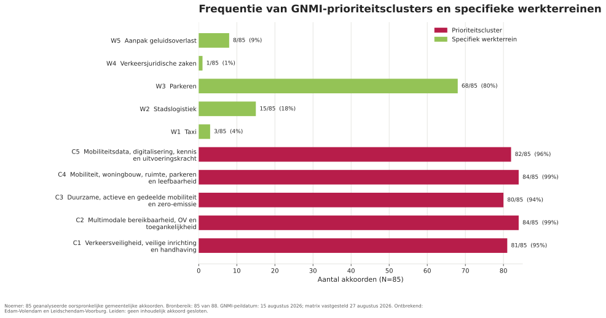
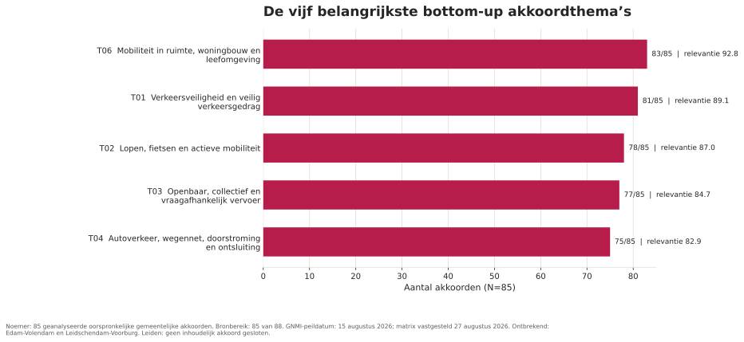
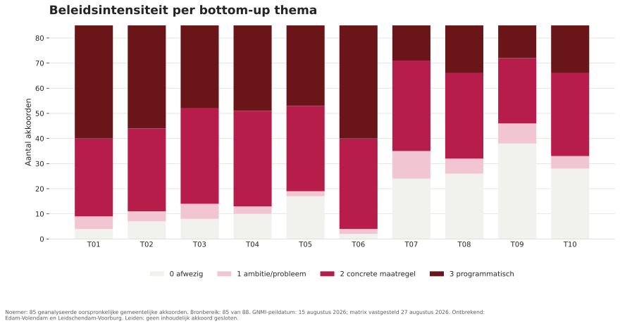
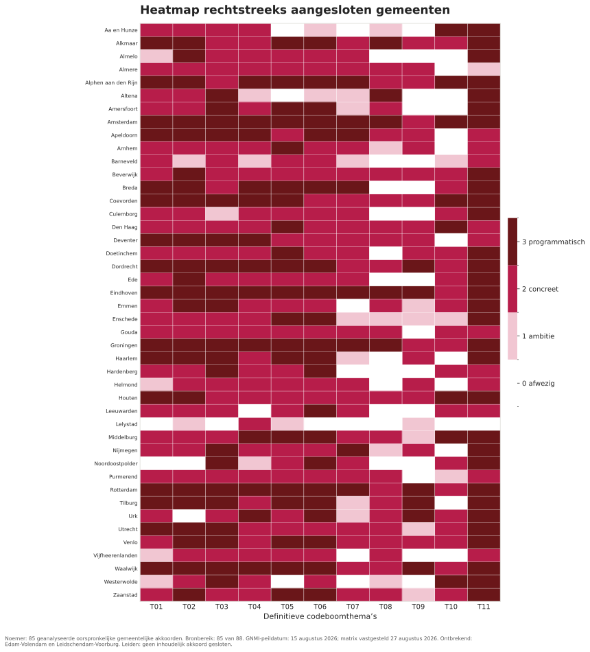
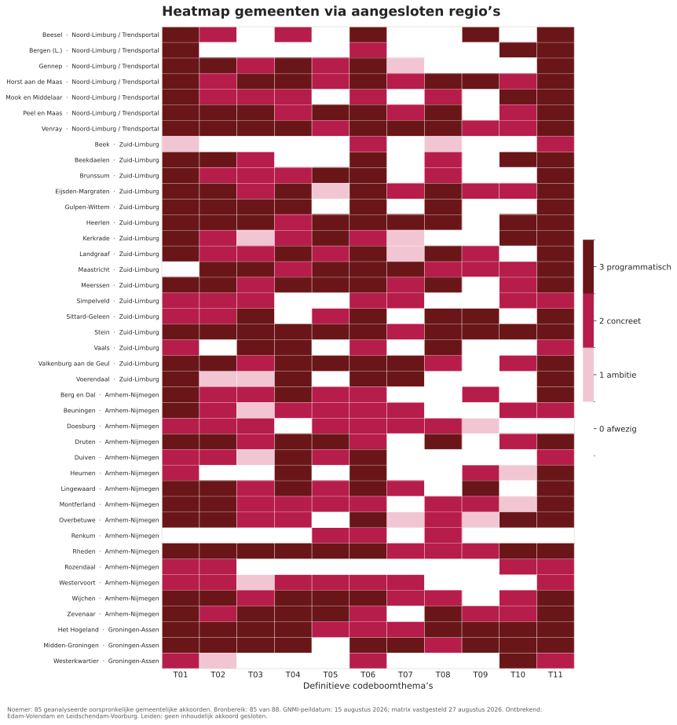
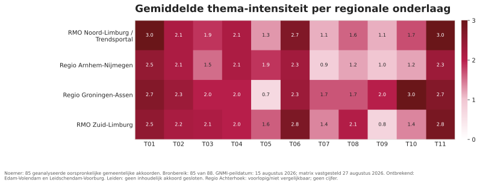
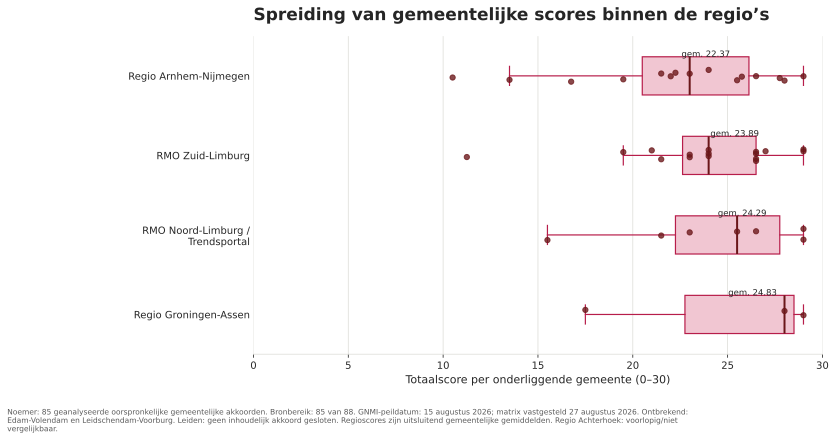
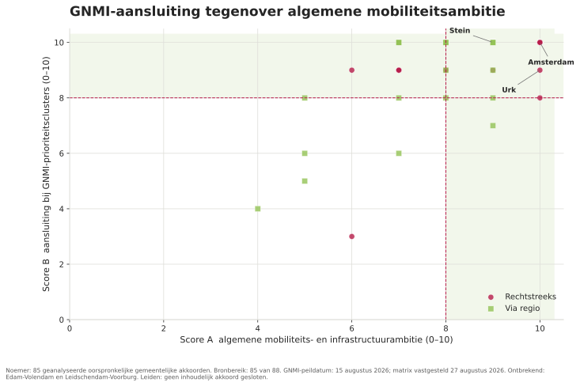
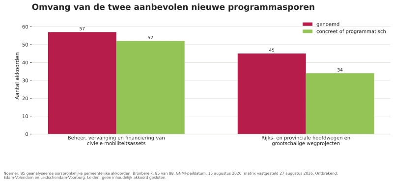

Alle negen figuren uit het onderzoek, als schaalbare SVG. Klik op een figuur om deze volledig te openen of download het bestand.
GNMI-thema’s in de akkoorden


De vijf meest voorkomende akkoordthema’s


Uitwerking van de akkoordthema’s


Heatmap: rechtstreeks aangesloten gemeenten


Heatmap: gemeenten via een regio


Heatmap: regionale gemiddelden


Spreiding van de regioscores


GNMI-aansluiting en mobiliteitsambitie


Nieuwe programmasporen
